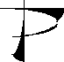

Prime Time Freeware AI CD-ROM
A portion of the contents of the repository is published by Prime Time
Freeware on two ISO-9660 CD-ROMs bound into a 224-page book. It sells
(list) for $60 US. Each CD-ROM contains approximately 600 megabytes
of gzipped archives (more than 2.5 gigabytes uncompressed and unpacked).
Sales of the CD-ROM(s) help support the expansion and maintenance of
the repository. For further information on the CD-ROM, please contact
Prime Time Freeware
370 Altair Way, Suite 150
Sunnyvale, CA 94086, USA
Tel: +1 408-433-9662
Fax: +1 408-433-0727
E-mail: ptf@cfcl.com
Order forms:
ASCII
or
PostScript
AI.Repository@cs.cmu.edu